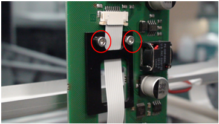
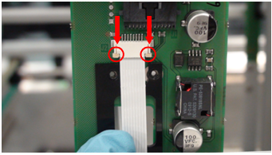
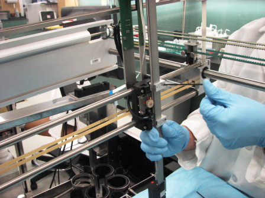
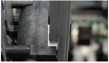
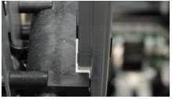
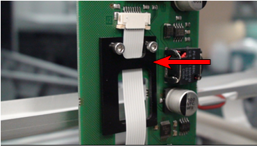
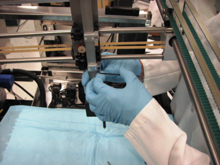
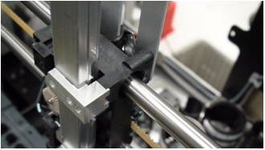
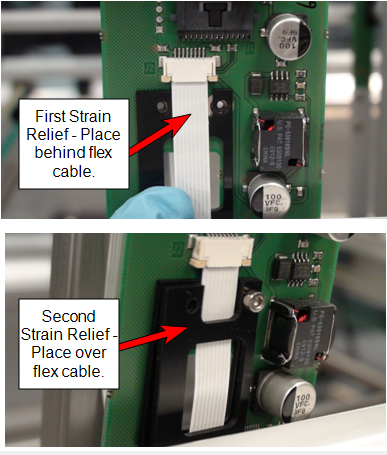

Panther Pipettor Arm Removal and Replacement

|
Note—
BLDC Pipettors can ONLY be installed with System Software v7.1 or higher. |
- PPE
- Panther Tool Kit including pipettor teach tools and teach caps
- PIPETTOR, REAGENT ASSY (LEFT)
- PIPETTOR, SAMPLE ASSY (RIGHT) or (FUSION)
- Pipettor Z-Motor Mesh Shim Tool, [TLS-06480]
- Panther Fusion Reconstitution Buffer [PRD-04333] (Content 1 box = 2 packs)
- 1 hour including Teaching
As per DHM-07074, PQs are NO longer required after Pipettor Replacement
- Put on proper PPE.
- Power down the Panther System.
- Open the front cover flaps.
- Remove gantry shield.
- Place an absorbent pad under the Pipettor arm to be replaced.
- Orient the Pipettor arm to an easily accessible position. Be sure the DiTi cone is away from other modules and parts of the system.
| Note—Note the cable routing through the strain relief prior to removing. |
 Remove the two screws that secure the flex cable strain relief (the black plastic piece in the following photo)..
Remove the two screws that secure the flex cable strain relief (the black plastic piece in the following photo).. | Note—The Left Pipettor arm has one black strain relief. The Right Pipettor arm has two black strain reliefs. |

- Remove flex cable by carefully unlocking the flex cable connector clamp. (See arrows in image below.)This will release the flex cable from the Pipettor Y-breakout PCB. Remove the flex cable.

- While securely holding onto the Pipettor arm, remove the restraining brackets to free the arm. Carefully remove the restraining brackets while keeping track of the “L-shaped” pipettor slide bearings. Set the brackets and bearings aside.


- Remove the arm.
- Verify DIP switch settings.
- Mount the arm by easing the teeth onto the gear.
- Secure the L-shaped bearing onto the Y-carriage.

- Secure the flex cable strain relief via the cable retention bracket.
| Note—Note the cable routing through the strain relief prior to removing. |
- Route the flex cable through the large opening of the strain relief.
- Attach the flex cable to the Y-sledge PCB, making sure the flex cable contacts are facing away from the PCB.
Ensure that the cable is fully seated into the ZIP socket and secure the clamp by carefully pushing both tabs in at the same time.
Routing of the left Pipettor arm flex cable should match the following photo.
- Manually slide the Pipettor arm up and down and verify the flex cable does not kink. If necessary, adjust the flex cable to eliminate the kink. Tighten the strain relief screws.
- Check to be sure all hardware is properly installed and secure the arm in place. The arm should be held firmly in place without over-tightening hardware, and should not creep down when released.

- Perform a Pipettor / Z-Motor Meshing Adjustment procedure.
- Install Panther System firmware to the module.
- Teach the Pipettor arm to modules.
| Note—If a Fusion is installed the Reagent Pipettor teaching to the Elution Track MUST be completed. |
- Verify the DIP switch settings.
- Mount the arm by easing the teeth onto the gear.
- Secure the L-shaped bearing onto the Y-carriage..

- Secure the flex cable strain relief via the cable retention bracket.
| Note—Note the cable routing through the strain relief prior to removing. |
- Attach the flex cable to the Y-sledge PCB, making sure the flex cable contacts are facing away from the PCB. Ensure that the cable is fully seated into the ZIP socket and secure the clamp by carefully pushing both tabs in at the same time.
- Sandwich the flex cable between the two strain relief pieces, as shown in the following photo.
| Note—Do not route the right arm flex cable through the strain relief opening. |

- Manually slide the Pipettor arm up and down and verify the flex cable does not kink. If necessary, adjust the flex cable to eliminate the kink. Tighten the strain relief screws.
- Check to be sure all hardware is properly installed and secure the arm in place. The arm should be held firmly in place without over-tightening hardware, and should not creep down when released.
- Perform a Pipettor / Z-Motor Meshing Adjustment procedure.
- Install Panther System firmware to the module.
- Teach the Pipettor arm to modules.
| Note—If a Fusion is installed the Reagent Pipettor teaching to the Elution Track MUST be completed. |
As per DHM-07074, PQs are NO longer required after Pipettor Replacement
- Run the Pipettor Pressure Integrity Test and attach the report to the UCR.
Remember that any value above 0.33 is now accepted as a passing test for the Pipettor Pressure Integrity.
- Perform both a cLLD AND bLLD test. Attach the passing AND bLLD tests to the Case in CRM.
First complete the cLLD test, then repeat the procedure selecting bLLD.
cLLD tests the capacitive circuit. bLLD will show wear in the piston drive.
Click the  button at the top of the page to send feedback, comments, or change requests.
button at the top of the page to send feedback, comments, or change requests.